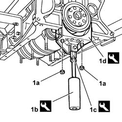
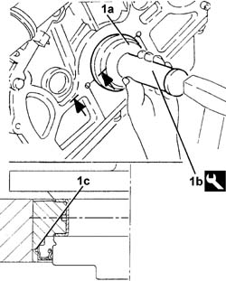
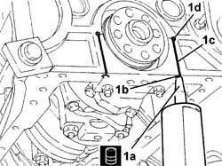

1020D50 CRANKSHAFT REAR SUPPORT - APPLICATION OF SILICON TO SEAL SURFACES WITH CRANKCASE SUMP AND FLYWHEEL REMOVED
- Path
- Procedures > 10 ENGINE > 1020 CRANKCASE SUMP AND COVERS > 1020D OIL SEALS ON CRANKSHAFT > 1020D50 CRANKSHAFT REAR SUPPORT - APPLICATION OF SILICON TO SEAL SURFACES WITH CRANKCASE SUMP AND FLYWHEEL REMOVED
- Kind
- repair procedure (removal / refitting; the operation number is the code)
- Applies to
- engines: 3.0 V6, 3.2 V6; all production periods
- Interactive page
- https://sloeber94.github.io/elrnDB-lThss/en/#/210198
Applies to: engines: 3.0 V6, 3.2 V6; all production periods
 Removing
Removing
 Refitting
Refitting1. Undo the nuts (1a) and remove the rear bearing cap using tools (1b), (1c) and (1d).
 | Description | Code | Function |
|---|---|---|---|
1b | Mallet | 1.846.011.000 | - |
| Description | Code | Function |
|---|---|---|---|
1c | Lever | 1.860.953.000 | - |
| Description | Code | Function |
|---|---|---|---|
1d | Extractor | 1.860.782.000 | - |
- Remove the main half-bearing.
- Remove the crankshaft rear oil seal

Applies to: engines: 3.0 V6, 3.2 V6; all production periods
Refitting
Removing- Thoroughly remove the sealant residues from the rear main bearing cap housing, the openings and the matching surfaces with the oil sump.
- Thoroughly remove all traces of engine oil, using heptane solvent or a similar product.
- Fit the rear main bearing cap, complete with half-bearing, and secure it tightening the nuts to the recommended torque.
 | Value - daNm | Fastening | Component | Ø |
|---|---|---|---|---|
. | (Engine crankcase side) 6 | Nuts | MAIN BEARING CAPS | M12 |
- Completely undo the nuts fixing the rear main bearing cap.
- Fit the rear main bearing cap, complete with half-bearing, and secure it definitively tightening the nuts to the recommended torque using the special angular tightening tool.
| Value - daNm | Fastening | Component | Ø |
|---|---|---|---|---|
. | (Engine crankcase side) 2.5 + 79° ± 2° | Nuts | MAIN BEARING CAPS | M12 |
| Description | Code | Function |
|---|---|---|---|
. | Torque wrench | 1.860.942.000 | Angular tightening of bearing cap bolts |
1. Fit the crankshaft rear oil seal (1a) using the tool (1b).
| Description | Code | Function |
|---|---|---|---|
1b | Fitting tool | 1.860.843.000 | - |

Applies to: engines: 3.0 V6, 3.2 V6; all production periods
1. Apply the recommended sealant (1a) through the openings (1b) and check that it comes out the entire length of the matching area (1c) between the cap and the crankcase and through the openings (1d).
 | Description | Qty. | Component | Type | Classification |
|---|---|---|---|---|---|
1a | Dow Corning 7091 | - | - | Silicone sealant | - |
